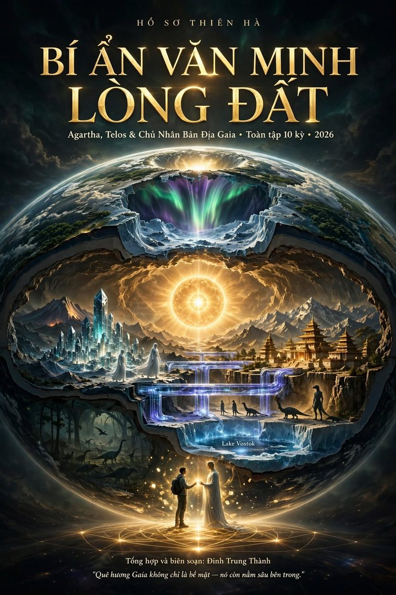

Trang chủ / Chuyên đề / Chuyên đề 4

Chuyên đề 4 · 10 kỳ
Văn Minh Lòng Đất
Trái Đất rỗng, Agartha, Telos, Shambhala và mạng lưới căn cứ ngầm.
-
Kỳ 31
CẤU TRÚC TRÁI ĐẤT RỖNG (HOLLOW EARTH) & MẠNG LƯỚI TRÁI ĐẤT TRONG (AGARTHA)
Sau khi khép lại chuyên đề 3 với bức tranh rực rỡ về di sản di truyền 12 chuỗi DNA và Kỷ nguyên Thức Tỉnh của loài người, chúng ta chính thức bước sang chuyên đề 4: Bí Ẩn Văn Minh Lòng Đất (Agartha) & Chủ Nhân Bản Địa Trái Đất . Nếu như ở các chuyên đề trước,…
Đọc kỳ này → -
Kỳ 32
NGUỒN GỐC CHỦNG TỘC BÒ SÁT BẢN ĐỊA & THẢM HỌA CHIẾN TRANH CỔ ĐẠI 65 TRIỆU NĂM TRƯỚC
Ở Kỳ 1, chúng ta đã cùng nhau mở ra bức màn bí mật về cấu trúc Trái Đất Rỗng (Hollow Earth), Mặt Trời Nội Thể và mạng lưới giao thông ngầm siêu hiện đại Agartha kết nối xuyên đại lục. Khi tìm hiểu về thế giới bên trong lòng đất, một trong những ẩn số gây bàng…
Đọc kỳ này → -
Kỳ 33
LỊCH SỬ CHIẾN TRANH GIỮA CÁC CHỦNG TỘC BẢN ĐỊA & CÁC THẾ LỰC NGOÀI VŨ TRỤ
Ở Kỳ 2, chúng ta đã cùng nhau khám phá nguồn gốc 10 triệu năm tiến hóa của chủng tộc Bò sát bản địa Trái Đất, thảm họa chiến tranh hạt nhân 65 triệu năm trước xóa sổ loài khủng long, cùng góc nhìn của cư dân lòng đất về dự án can thiệp di truyền gia tốc tạo…
Đọc kỳ này → -
Kỳ 34
MẠNG LƯỚI CĂN CỨ QUÂN SỰ NGẦM SÂU (DUMBs) & CUỘC CHIẾN BÓNG TỐI DƯỚI LÒNG ĐẤT
Ở Kỳ 3, chúng ta đã cùng nhau tìm hiểu về lịch sử các cuộc đụng độ cổ đại giữa chủng tộc Bò sát bản địa và các lực lượng can thiệp từ ngoài vũ trụ, cùng sự phân biệt rõ ràng giữa cư dân bản địa hòa bình và các đế chế xâm lược tiêu cực. Tuy nhiên, bức tranh…
Đọc kỳ này → -
Kỳ 35
THÀNH PHỐ TELOS DƯỚI NÚI SHASTA & DI SẢN VĂN MINH LEMURIA (MU)
Ở Kỳ 4, chúng ta đã vạch trần ma trận u tối của Mạng lưới Căn cứ Quân sự Ngầm sâu (DUMBs) và chiến dịch quét sạch các cơ sở ngầm tiêu cực của Lực lượng Liên minh Trái Đất phối hợp với Liên Đoàn Thiên Hà. Tách biệt hoàn toàn khỏi những công nghệ quân sự đen…
Đọc kỳ này → -
Kỳ 36
VƯƠNG QUỐC SHAMBHALA, THẦN THOẠI TÂY TẠNG & CÁC CỔNG SAO NĂNG LƯỢNG DÃY HIMALAYA
Ở Kỳ 5, chúng ta đã cùng nhau du hành đến thành phố ngầm Telos bên dưới ngọn núi thiêng Shasta, khám phá di sản Tình Yêu Thương và tri thức tinh thể được cư dân Lemuria bảo tồn trọn vẹn qua hàng chục ngàn năm. Hôm nay, chúng ta sẽ tiếp tục chuyến hành trình…
Đọc kỳ này → -
Kỳ 37
BÍ ẨN HỒ VOSTOK & CÁC CẤU TRÚC CỔ ĐẠI NẰM SÂU DƯỚI BĂNG GIÁ NAM CỰC
Ở Kỳ 6, chúng ta đã cùng nhau hành hương đến dãy núi Himalaya hùng vĩ để giải mã Vương quốc Shambhala — trung tâm năng lượng từ bi và thư viện tri thức giác ngộ của mạng lưới Agartha. Hôm nay, chuyến du hành giải mã thế giới ngầm sẽ đưa chúng ta đến với vùng…
Đọc kỳ này → -
Kỳ 38
CĂN CỨ NGẦM DULCE & BÍ ẨN CÁC CUỘC ĐỤNG ĐỘ NĂNG LƯỢNG DƯỚI LÒNG ĐẤT
Ở Kỳ 7, chúng ta đã cùng nhau thâm nhập vào vùng đất Nam Cực băng giá để khám phá Hồ nước ngọt ấm Vostok nằm sâu 4 km dưới lòng băng, tàn tích các đại đô thị kim tự tháp cổ đại và sự thức tỉnh của chiến hạm Space Ark Nam Cực. Hôm nay, chúng ta sẽ quay trở lại…
Đọc kỳ này → -
Kỳ 39
CỬA NGÕ CỰC BẮC & SỰ THỨC TỈNH TOÀN CẦU CỦA MẠNG LƯỚI AGARTHA
Ở Kỳ 8, chúng ta đã cùng nhau thâm nhập vào tầng sâu của căn cứ ngầm Dulce, giải mã trận đụng độ năng lượng lịch sử năm 1979 và chiến dịch quét sạch, niêm phong vĩnh viễn các cơ sở tiêu cực dưới lòng đất của Lực lượng Liên minh. Hôm nay, chuyến du hành giải…
Đọc kỳ này → -
Kỳ 40
KỶ NGUYÊN HỢP NHẤT TRÁI ĐẤT — CON NGƯỜI BỀ MẶT & VĂN MINH AGARTHA BƯỚC VÀO 5D
Hành trình 10 kỳ của chuyên đề 4: Bí Ẩn Văn Minh Lòng Đất (Agartha) & Chủ Nhân Bản Địa Trái Đất đã chính thức bước vào thời khắc khép lại rực rỡ nhất! Qua 9 kỳ vừa qua, chúng ta đã cùng nhau du hành qua từng tầng sâu của hành tinh Gaia: Khám phá cấu trúc Trái…
Đọc kỳ này →
← Chuyên đề 3: Dòng Máu Anunnaki Chuyên đề 5: Chương Trình Không Gian Bí Mật →